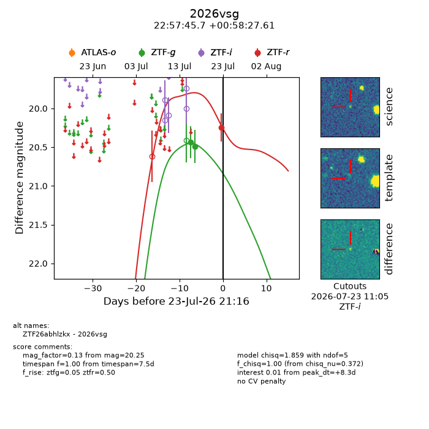
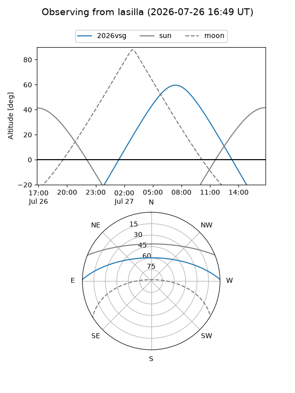
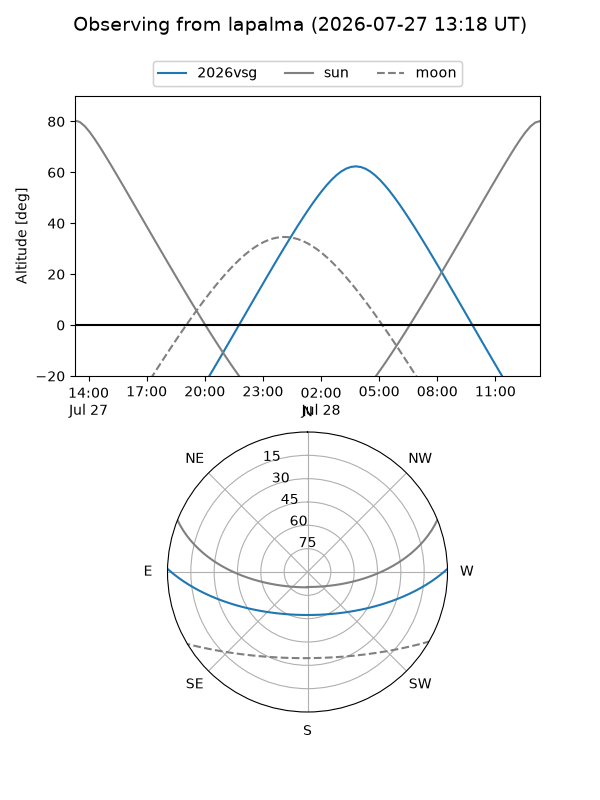
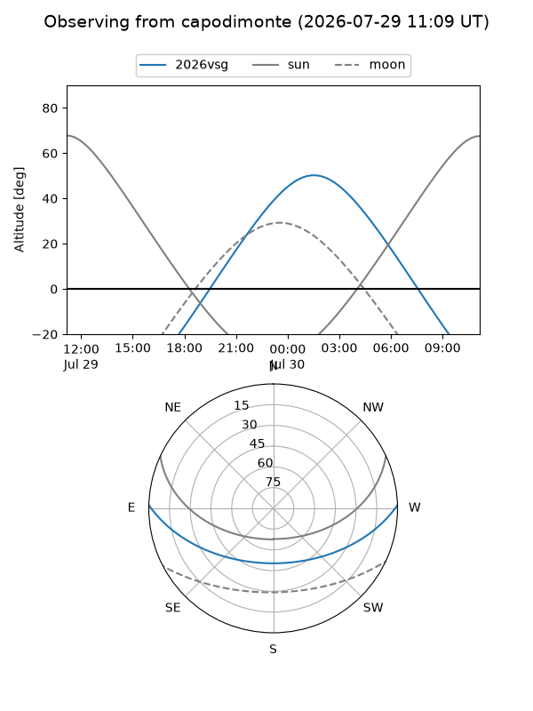
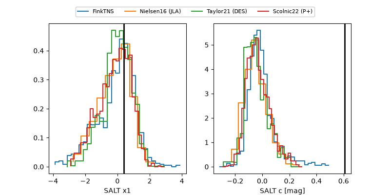

2026vsg
Target 2026vsg at 2026-07-23 21:19
Aliases and brokers:
FINK-ZTF: ztf.fink-portal.org/ZTF26abhlzkx
Lasair-ZTF: lasair-ztf.lsst.ac.uk/objects/ZTF26abhlzkx
ALeRCE-ZTF: alerce.online/object/ZTF26abhlzkx
YSE-PZ: ziggy.ucolick.org/yse/transient_detail/2026vsg
TNS name: wis-tns.org/object/2026vsg
Direct TNS query: direct search
alt names
ZTF26abhlzkx (ztf,fink_ztf)
2026vsg (tns,yse)
Coordinates:
equatorial (ra, dec) = 344.4405,+0.97434
equatorial (HMS+DMS) = 22:57:45.72,+00:58:27.61
galactic (l, b) = (74.1004,-50.79322)
Flags:
TNS type: nan
peak dt: +8.3
Photometry:
last ztfg=20.49, ztfr=20.25
2 ztfg, 1 ztfr detections
Lightcurve

Visibility



Additional plots
